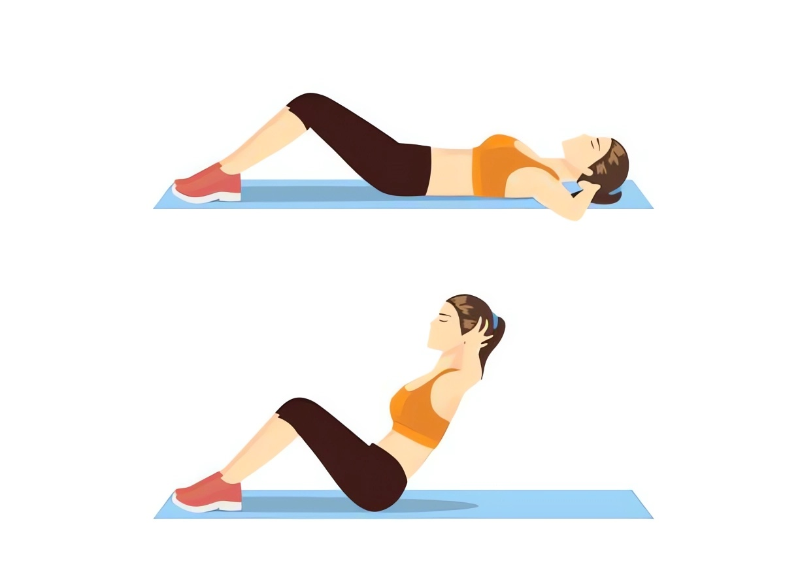

LE CRUNCH CLASSIQUE
Informations
Le crunch classique est un exercice abdominal visant principalement à renforcer les muscles de la région abdominale, en mettant particulièrement l'accent sur les muscles droits de l'abdomen.
Position de départ : Allongez-vous sur le dos, genoux pliés, pieds à plat. Placez vos mains derrière votre tête sans intercaler les doigts.
Activation des muscles : Contractez les abdominaux pour stabiliser le tronc.
Mouvement : Soulevez légèrement les épaules et la tête du sol en contractant les abdominaux, sans relever complètement le dos.
Point culminant : Atteignez le point le plus haut de la contraction, maintenez pendant une seconde.
Retour à la position de départ : Redescendez lentement en contrôlant le mouvement.